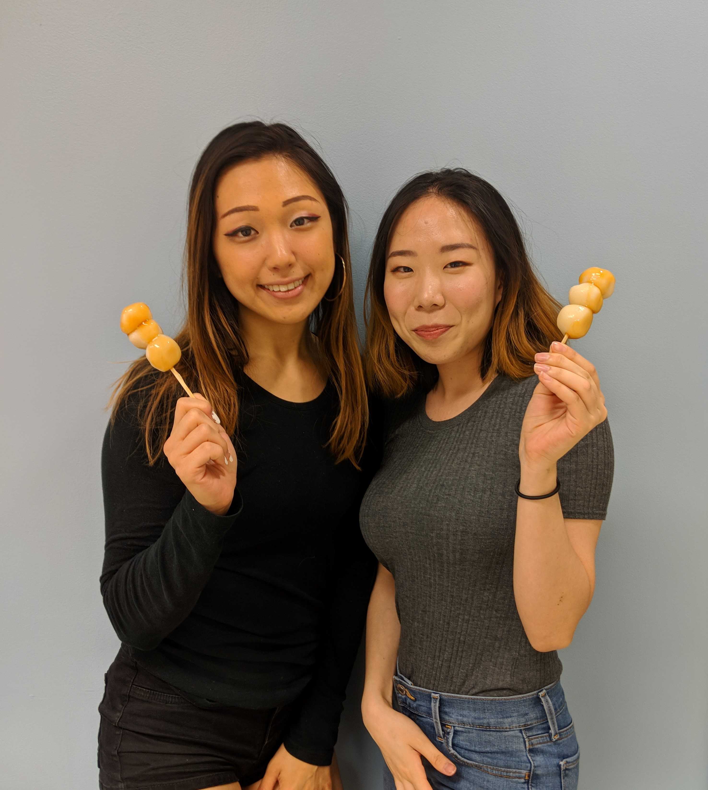
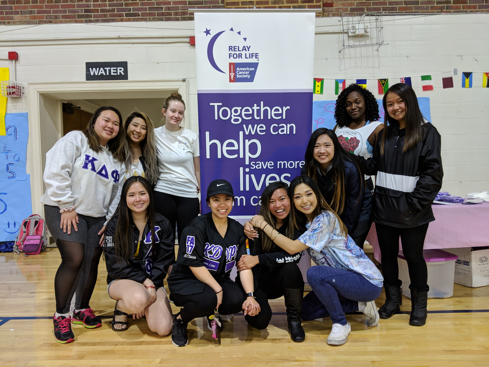

SISTERHOOD
The heart of our sorority is in our love, friendship, and sisterhood. Sisterhood extends beyond undergraduate years and truly lasts a lifetime. With over 6000 sisters internationally, there will always be a family away from home.
SCHOLARSHIP
We highly value academics and strive to achieve and maintain academic excellence. aKDPhi contains a breadth of academic and career resources for sisters, such as study groups, tutoring, and mentorships. Our alumnae offer job connections, advice, as well as scholarships for our active sisters.
Our chapter consistently holds the highest GPA among all Asian Greek Letter Organizations and our sisters come from a diverse range of majors, from communications to premed, so sisters are always able to reach out to one another for help.
LEADERSHIP
We aim to cultivate women to become young leaders. aKDPhi provides a variety of leadership opportunities, with sisters becoming leaders in the APA community, United Greek Council, and most importantly, within our own organization. Leadership roles within the chapter help sisters grow. With many positions in our organization, it is easy for sisters to quickly get involved and grow as leaders.

ASIAN AWARENESS
As an Asian-interest, but not Asian-exclusive, organization, we strive to promote Asian awareness in the community and educate others about our culture.
We often co-host events with Asian American Pacific Islander student organizations on campus as well as other affiliated organizations. Every May we celebrate Asian Pacific American Heritage Month by holding a number of workships, cultural events, or celebrations at UNC.
SERVICE
We stress our national philanthropy, Breast Cancer Awareness. Nationwide, we have raised over $250,000 throughout the years for breast cancer research. During National Breast Cancer Awareness Month in October, you can find us fundraising on the Quad and educating the community about breast cancer awareness. We also hold our annual Breast Cancer Date Auction. Each year, we help by donating over $2000 to the cause.
